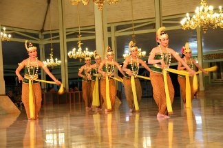
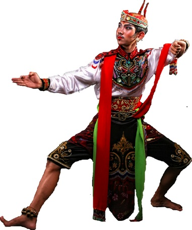
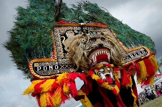

Tarian
Tari Gambyong
Pada mulanya tarian ini hanyalah tarian jalanan yang juga dipentaskan oleh penari jalanan yang biasa disebut dengan sebutan Tledek (Bahasa Jawa). Nama Tledek yang menarikan tarian ini adalah Gambyong, ia cukup terkenal hampir di seluruh wilayah Surakarta pada Zaman Sinuhun Paku Buwono IV ( 1788 s/d 1820). Si Gambyong memiliki suara yang indah serta gerakan yang gemulai, sehingga ia mudah dikenal orang. Semenjak itulah tarian yang dimainkannya dijuluki Tarian Gambyong.
Tari Gambyong merupakan tari kreasi baru dari perkembangan Tari Tayub. Biasanya tari gambyong dilakukan bersama-sama oleh beberapa penari. Unsur estetis dari tari yang dilakukan bersama-sama terletak pada garis dan gerak yang serba besar. Gerak tangan, kaki dan kepala tampak lebih indah dan ekspresif karena ditarikan bersamaan. Tarian ini semakin elok apabila penari dapat menyelaraskan gerakan dengan irama kendhang. Sebab, kendhang sering pula disebut otot tarian dan pemandu gendhing. Secara umum, Tari Gambyong terdiri atas tiga bagian, yaitu: awal, isi, dan akhir atau dalam istilah tari Jawa gaya Surakarta disebut dengan istilah maju beksan, beksan, dan mundur beksan.
Sumber : https://id.wikipedia.org/wiki/Tari_Gambyong
Tari Remo

Tari Remo adalah gambaran kharakter dinamis masyarakat Jawa Timur dan merupakan tarian penyambut tamu lewat gerak selamat datang khas Jawa Timur. Tarian ini pada awalnya merupakan tarian pengantar pertunjukan ludruk atau wayang kulit jawa timuran. Namun, saat ini sering ditarikan secara terpisah sebagai sambutan atas tamu kenegaraan dalam upacara kenegaraan, maupun dalam festival kesenian daerah.
Tarian Remo menceritakan perjuangan seorang pangeran dalam medan laga. Akan tetapi dalam perkembangannya tarian ini menjadi lebih sering ditarikan oleh perempuan, sehingga memunculkan gaya tarian yang lain: Remo Putri atau Tari Remo gaya perempuan. Disebutkan bahwa tarian remo ini di promosikan sekitar tahun 1900, yang kemudian dimanfaatkan oleh nasionalis indonesia untuk berkomunikasi kepada masyarakat.
Sumber : http://ridwanaz.com/umum/seni-budaya/tari-remo-seni-tari-jawa-timur-sejarah-alat-musik/
Tari Reog Ponorogo
Ada lima versi cerita populer yang berkembang di masyarakat tentang asal usul Reog dan Warok, namun salah satu cerita yang paling terkenal adalah cerita tentang pemberontakan Ki Ageng Kutu, seorang abdi kerajaan pada masa Bhre Kertabhumi, Raja Majapahit terakhir yang berkuasa pada abad ke-15. Ki Ageng Kutu murka akan pengaruh kuat dari pihak istri raja Majapahit yang berasal dari Tiongkok, selain itu juga murka kepada rajanya dalam pemerintahan yang korup, ia pun melihat bahwa kekuasaan Kerajaan Majapahit akan berakhir. Ia lalu meninggalkan sang raja dan mendirikan perguruan di mana ia mengajar seni bela diri kepada anak-anak muda, ilmu kekebalan diri, dan ilmu kesempurnaan dengan harapan bahwa anak-anak muda ini akan menjadi bibit dari kebangkitan kerajaan Majapahit kembali. Sadar bahwa pasukannya terlalu kecil untuk melawan pasukan kerajaan maka pesan politis Ki Ageng Kutu disampaikan melalui pertunjukan seni Reog, yang merupakan "sindiran" kepada Raja Kertabhumi dan kerajaannya. Pagelaran Reog menjadi cara Ki Ageng Kutu membangun perlawanan masyarakat lokal menggunakan kepopuleran Reog.
Dalam pertunjukan Reog ditampilkan topeng berbentuk kepala singa yang dikenal sebagai "Singa barong", raja hutan, yang menjadi simbol untuk Kertabhumi, dan diatasnya ditancapkan bulu-bulu merak hingga menyerupai kipas raksasa yang menyimbolkan pengaruh kuat para rekan Cinanya yang mengatur dari atas segala gerak-geriknya. Jatilan, yang diperankan oleh kelompok penari gemblak yang menunggangi kuda-kudaan menjadi simbol kekuatan pasukan Kerajaan Majapahit yang menjadi perbandingan kontras dengan kekuatan warok, yang berada dibalik topeng badut merah yang menjadi simbol untuk Ki Ageng Kutu, sendirian dan menopang berat topeng singabarong yang mencapai lebih dari 50 kg hanya dengan menggunakan giginya. Kepopuleran Reog Ki Ageng Kutu akhirnya menyebabkan Bhre Kertabhumi mengambil tindakan dan menyerang perguruannya, pemberontakan oleh warok dengan cepat diatasi, dan perguruan dilarang untuk melanjutkan pengajaran akan warok. Namun murid-murid Ki Ageng kutu tetap melanjutkannya secara diam-diam. Walaupun begitu, kesenian Reognya sendiri masih diperbolehkan untuk dipentaskan karena sudah menjadi pertunjukan populer di antara masyarakat, namun jalan ceritanya memiliki alur baru di mana ditambahkan karakter-karakter dari cerita rakyat Ponorogo yaitu Kelono Sewandono, Dewi Songgolangit, dan Sri Genthayu.
Versi resmi alur cerita Reog Ponorogo kini adalah cerita tentang Raja Ponorogo yang berniat melamar putri Kediri, Dewi Ragil Kuning, namun di tengah perjalanan ia dicegat oleh Raja Singabarong dari Kediri. Pasukan Raja Singabarong terdiri dari merak dan singa, sedangkan dari pihak Kerajaan Ponorogo Raja Kelono dan Wakilnya Bujang Anom, dikawal oleh warok (pria berpakaian hitam-hitam dalam tariannya), dan warok ini memiliki ilmu hitam mematikan. Seluruh tariannya merupakan tarian perang antara KerajaanKediri dan Kerajaan Ponorogo, dan mengadu ilmu hitam antara keduanya, para penari dalam keadaan "kerasukan" saat mementaskan tariannya.
Hingga kini masyarakat Ponorogo hanya mengikuti apa yang menjadi warisan leluhur mereka sebagai warisan budaya yang sangat kaya. Dalam pengalamannya Seni Reog merupakan cipta kreasi manusia yang terbentuk adanya aliran kepercayaan yang ada secara turun temurun dan terjaga. Upacaranya pun menggunakan syarat-syarat yang tidak mudah bagi orang awam untuk memenuhinya tanpa adanya garis keturunan yang jelas. mereka menganut garis keturunan Parental dan hukum adat yang masih berlaku.
Tokoh-tokoh dalam seni Tari Reog
Sumber : https://id.wikipedia.org/wiki/Reog_(Ponorogo)